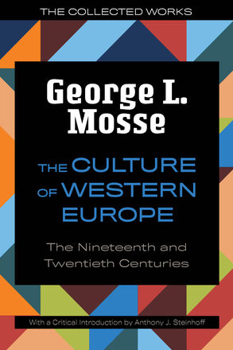
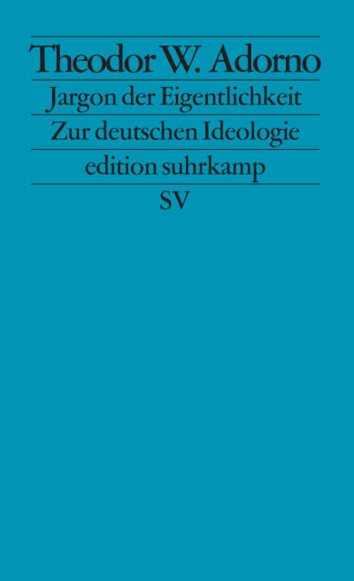
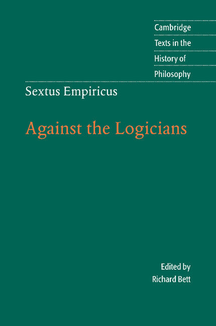

15:43 · 11 OPERE
La calata dei lanzichenecchi.
Il filo del discorso
La metafora dei lanzichenecchi introduce una critica al rapporto fra prestigio culturale e capacità di comprendere. Dr Divago si domanda che cosa resti di una cultura quando il linguaggio specialistico e il successo pubblico si separano dal confronto fra persone. Il libro di Mosse accompagna il richiamo a un terreno comune di giudizio; l’episodio di Sokal e il saggio di Adorno diventano esempi nella polemica contro l’autorità del gergo. Il riferimento a Keynes apre una digressione sulla responsabilità di interpretare le conseguenze delle decisioni politiche. La seconda parte torna ai problemi filosofici della verità e della comunicazione attraverso Gorgia, Parmenide e Sesto Empirico. La conclusione richiama Shakespeare e Spinoza per proporre un esercizio di comprensione dei limiti umani.
I libri nel discorso

La cultura dell’Europa occidentale nell’Ottocento e nel Novecento
Copertina: University of Wisconsin Press · The Culture of Western Europe · 2023 · introduzione di Anthony J. Steinhoff
Copertina autentica dell’edizione inglese del 2023 della stessa opera citata con il titolo italiano. Non è la copertina Mondadori del 1986 e non identifica l’esemplare usato nel video.
George Mosse e La cultura dell’Europa occidentale sono annunciati.
Passaggio 2:16 ↗ · Fonti e libro ↗
Pensieri
Identificazione probabile
Copertina: UTET · a cura di Bruno Nacci · 2021
Copertina autentica dell’edizione di riferimento, non attribuita all’esemplare del video.
La massima sulla verità ai due lati dei Pirenei richiama probabilmente i Pensieri; il titolo non è pronunciato.
Passaggio 3:29 ↗ · Fonti e libro ↗
I vestiti nuovi dell’imperatore
Identificazione probabile
Copertina: Rizzoli, 2014 · eBook di riferimento
Il re nudo è una probabile allusione alla fiaba di Andersen, senza annuncio del titolo.
Passaggio 4:54 ↗ · Fonti e libro ↗
Imposture intellettuali. Quale deve essere il rapporto tra filosofia e scienza?
Copertina: Garzanti · Saggi blu · 1999 · traduzione di Fabio Acerbi e Monica Ugaglia
Immagine autentica dell’opera, controllata visivamente; l’edizione di riferimento non è attribuita al filmato.
Alan Sokal e Imposture intellettuali sono nominati.
Passaggio 6:40 ↗ · Fonti e libro ↗
Le conseguenze economiche della pace
Identificazione probabile
Copertina: Adelphi · L’oceano delle storie · 2007 · traduzione di Franco Salvatorelli
Immagine autentica dell’opera, controllata visivamente; l’edizione di riferimento non è attribuita al filmato.
Keynes, Versailles e il 1920 rendono probabile il riferimento all’opera, senza un titolo pronunciato.
Passaggio 9:06 ↗ · Fonti e libro ↗
Il gergo dell’autenticità. Sull’ideologia tedesca
Copertina: Suhrkamp · Jargon der Eigentlichkeit · edizione tedesca 2015
Copertina tedesca autentica della stessa opera citata in italiano; non è la copertina della traduzione Bollati Boringhieri. Il 1964 è l’anno di prima pubblicazione, il 1989 quello della traduzione italiana qui riscontrata.
Adorno e Il gergo dell’autenticità sono annunciati.
Passaggio 10:17 ↗ · Fonti e libro ↗
Divina Commedia
Identificazione probabile
Copertina: Giunti Barbera · Passepartout, 2021 · edizione di riferimento
I versi attribuiti a Cacciaguida richiamano Paradiso XVI della Divina Commedia.
Passaggio 10:51 ↗ · Fonti e libro ↗
Sulla natura
Copertina: Bompiani · Testi a fronte · 2001
Copertina autentica controllata visivamente. Edizione di riferimento; non identifica l’esemplare usato o citato nel video.
Il poema di Parmenide e la dea sono richiamati; Sulla natura è il titolo convenzionale.
Passaggio 12:37 ↗ · Fonti e libro ↗
Contro i logici (Adversus mathematicos VII–VIII)
Copertina dei libri VII–VIII dell’Adversus mathematicos: Cambridge University Press · Against the Logicians · 2005 · traduzione e cura di Richard Bett
Edizione inglese della sezione Contro i logici, tradizionalmente numerata come libri VII–VIII dell’Adversus mathematicos. Non rappresenta una traduzione dei soli libri I–VI e non si attribuisce al relatore questa edizione.
Adversus mathematicos è annunciato nel richiamo a Gorgia; il passo pertinente appartiene alla sezione Contro i logici, VII–VIII.
Passaggio 13:00 ↗ · Fonti e libro ↗
Amleto
Identificazione probabile
Copertina: BUR · 2022 · traduzione di Rocco Coronato · illustrazioni di John Austen
Immagine autentica dell’opera, controllata visivamente; non identifica l’edizione usata nel video.
L’immagine del guscio di noce e dello spazio infinito richiama Amleto II,2; titolo non annunciato.
Passaggio 14:39 ↗ · Fonti e libro ↗Trattato politico
Identificazione probabile
Copertina: Laterza · Biblioteca Universale 334 · 1995 · a cura di Lelia Pezzillo
Immagine autentica dell’opera, controllata visivamente; l’edizione di riferimento non è attribuita al filmato.
La massima attribuita a Spinoza sul comprendere invece di deridere richiama probabilmente Trattato politico I,4.
Passaggio 15:28 ↗ · Fonti e libro ↗